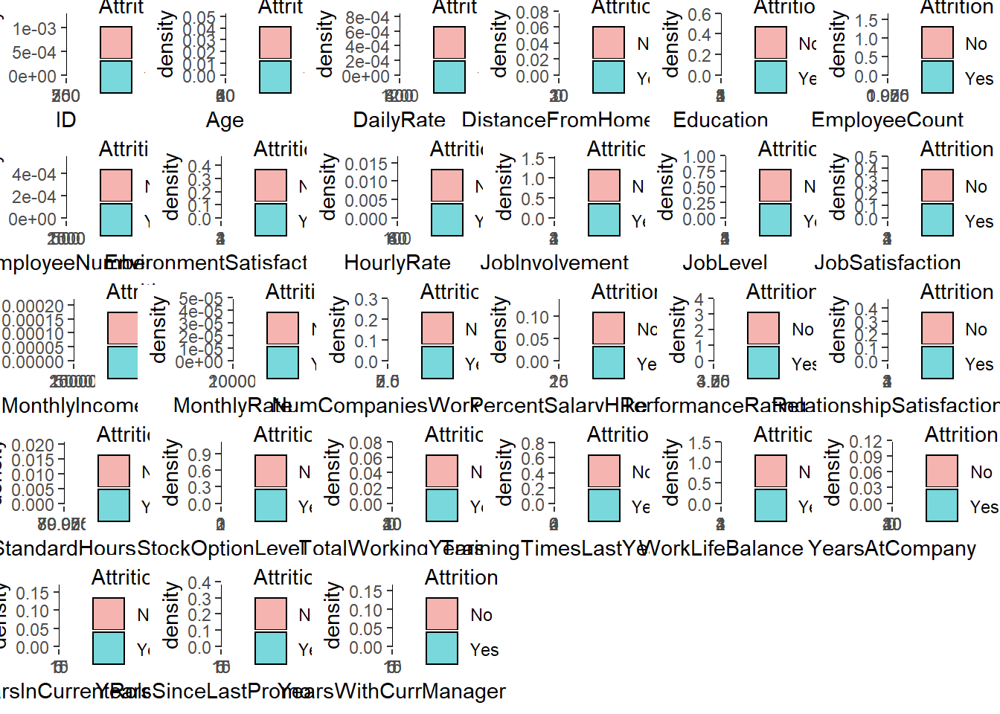

DDS Case Study 2 RMarkdown
Sean McWhirter
11/30/2019
Hello and thank you for providing the opportunity to provide my insight on this challenge that the company is facing. We will walk through the data set that was provided, look at some of the variables, build a classification model tha twill tell us the liklihood of an employee leaving, and finally, we will use linear regression to predict th monthly income of a set of employees.
#Upload data and take first look
#File Upload
work=read.csv("C:/Users/seans/Desktop/DDS/Unit 14 and 15 Case Study 2/CaseStudy2-data.csv", header=TRUE, sep=",", stringsAsFactors = TRUE)
saveRDS(work, file ="work.Rds")
readRDS(work, file ="work.Rds")## ID Age Attrition BusinessTravel DailyRate Department
## 1 1 32 No Travel_Rarely 117 Sales
## 2 2 40 No Travel_Rarely 1308 Research & Development
## 3 3 35 No Travel_Frequently 200 Research & Development
## 4 4 32 No Travel_Rarely 801 Sales
## 5 5 24 No Travel_Frequently 567 Research & Development
## 6 6 27 No Travel_Frequently 294 Research & Development
## 7 7 41 No Travel_Rarely 1283 Research & Development
## 8 8 37 No Travel_Rarely 309 Sales
## 9 9 34 No Travel_Rarely 1333 Sales
## 10 10 34 No Travel_Frequently 653 Research & Development
## 11 11 43 No Travel_Rarely 823 Research & Development
## 12 12 28 No Non-Travel 280 Human Resources
## 13 13 35 No Travel_Rarely 950 Research & Development
## 14 14 30 No Travel_Rarely 202 Sales
## 15 15 46 No Travel_Rarely 991 Human Resources
## 16 16 31 No Non-Travel 1188 Sales
## 17 17 32 No Travel_Rarely 498 Research & Development
## 18 18 46 No Non-Travel 1144 Research & Development
## 19 19 34 No Travel_Rarely 181 Research & Development
## 20 20 44 No Travel_Rarely 170 Research & Development
## 21 21 36 No Travel_Rarely 913 Research & Development
## 22 22 48 No Travel_Rarely 817 Sales
## 23 23 43 No Travel_Frequently 1001 Research & Development
## 24 24 31 No Travel_Frequently 715 Sales
## 25 25 33 No Travel_Rarely 1069 Research & Development
## 26 26 44 No Travel_Rarely 1099 Sales
## 27 27 38 No Travel_Rarely 1245 Sales
## DistanceFromHome Education EducationField EmployeeCount
## 1 13 4 Life Sciences 1
## 2 14 3 Medical 1
## 3 18 2 Life Sciences 1
## 4 1 4 Marketing 1
## 5 2 1 Technical Degree 1
## 6 10 2 Life Sciences 1
## 7 5 5 Medical 1
## 8 10 4 Life Sciences 1
## 9 10 4 Life Sciences 1
## 10 10 4 Technical Degree 1
## 11 6 3 Medical 1
## 12 1 2 Life Sciences 1
## 13 7 3 Other 1
## 14 2 1 Technical Degree 1
## 15 1 2 Life Sciences 1
## 16 20 2 Marketing 1
## 17 3 4 Medical 1
## 18 7 4 Medical 1
## 19 2 4 Medical 1
## 20 1 4 Life Sciences 1
## 21 9 2 Medical 1
## 22 2 1 Marketing 1
## 23 9 5 Medical 1
## 24 2 4 Other 1
## 25 1 3 Life Sciences 1
## 26 5 3 Marketing 1
## 27 14 3 Life Sciences 1
## EmployeeNumber EnvironmentSatisfaction Gender HourlyRate JobInvolvement
## 1 859 2 Male 73 3
## 2 1128 3 Male 44 2
## 3 1412 3 Male 60 3
## 4 2016 3 Female 48 3
## 5 1646 1 Female 32 3
## 6 733 4 Male 32 3
## 7 1448 2 Male 90 4
## 8 1105 4 Female 88 2
## 9 1055 3 Female 87 3
## 10 1597 4 Male 92 2
## 11 1866 1 Female 81 2
## 12 1858 3 Male 43 3
## 13 845 3 Male 59 3
## 14 508 3 Male 72 3
## 15 1314 4 Female 44 3
## 16 947 4 Female 45 3
## 17 966 3 Female 93 3
## 18 487 3 Female 30 3
## 19 1755 4 Male 97 4
## 20 1903 2 Male 78 4
## 21 699 2 Male 48 2
## 22 712 2 Male 56 4
## 23 663 4 Male 72 3
## 24 1613 4 Male 54 3
## 25 969 2 Female 42 2
## 26 1267 2 Male 88 3
## 27 1582 3 Male 80 3
## JobLevel JobRole JobSatisfaction MaritalStatus
## 1 2 Sales Executive 4 Divorced
## 2 5 Research Director 3 Single
## 3 3 Manufacturing Director 4 Single
## 4 3 Sales Executive 4 Married
## 5 1 Research Scientist 4 Single
## 6 3 Manufacturing Director 1 Divorced
## 7 1 Research Scientist 3 Married
## 8 2 Sales Executive 4 Divorced
## 9 1 Sales Representative 3 Married
## 10 2 Healthcare Representative 3 Married
## 11 5 Manager 3 Married
## 12 1 Human Resources 4 Divorced
## 13 3 Manufacturing Director 3 Single
## 14 1 Sales Representative 2 Married
## 15 1 Human Resources 1 Single
## 16 2 Sales Executive 3 Married
## 17 2 Manufacturing Director 1 Married
## 18 2 Manufacturing Director 3 Married
## 19 1 Research Scientist 4 Married
## 20 2 Healthcare Representative 1 Married
## 21 2 Manufacturing Director 2 Divorced
## 22 2 Sales Executive 2 Married
## 23 2 Laboratory Technician 3 Divorced
## 24 2 Sales Executive 1 Single
## 25 2 Healthcare Representative 4 Single
## 26 5 Manager 2 Married
## 27 2 Sales Executive 2 Married
## MonthlyIncome MonthlyRate NumCompaniesWorked Over18 OverTime
## 1 4403 9250 2 Y No
## 2 19626 17544 1 Y No
## 3 9362 19944 2 Y No
## 4 10422 24032 1 Y No
## 5 3760 17218 1 Y Yes
## 6 8793 4809 1 Y No
## 7 2127 5561 2 Y Yes
## 8 6694 24223 2 Y Yes
## 9 2220 18410 1 Y Yes
## 10 5063 15332 1 Y No
## 11 19392 22539 7 Y No
## 12 2706 10494 1 Y No
## 13 10221 18869 3 Y No
## 14 2476 17434 1 Y No
## 15 3423 22957 6 Y No
## 16 6932 24406 1 Y No
## 17 6725 13554 1 Y No
## 18 5258 16044 2 Y No
## 19 2932 5586 0 Y Yes
## 20 5033 9364 2 Y No
## 21 8847 13934 2 Y Yes
## 22 8120 18597 3 Y No
## 23 5679 19627 3 Y Yes
## 24 5332 21602 7 Y No
## 25 6949 12291 0 Y No
## 26 18213 8751 7 Y No
## 27 9924 12355 0 Y No
## PercentSalaryHike PerformanceRating RelationshipSatisfaction
## 1 11 3 3
## 2 14 3 1
## 3 11 3 3
## 4 19 3 3
## 5 13 3 3
## 6 21 4 3
## 7 12 3 1
## 8 14 3 3
## 9 19 3 4
## 10 14 3 2
## 11 13 3 4
## 12 15 3 2
## 13 21 4 2
## 14 18 3 1
## 15 12 3 3
## 16 13 3 4
## 17 12 3 3
## 18 14 3 3
## 19 14 3 1
## 20 15 3 4
## 21 11 3 3
## 22 12 3 4
## 23 13 3 2
## 24 13 3 4
## 25 14 3 1
## 26 11 3 3
## 27 11 3 4
## StandardHours StockOptionLevel TotalWorkingYears TrainingTimesLastYear
## 1 80 1 8 3
## 2 80 0 21 2
## 3 80 0 10 2
## 4 80 2 14 3
## 5 80 0 6 2
## 6 80 2 9 4
## 7 80 0 7 5
## 8 80 3 8 5
## 9 80 1 1 2
## 10 80 1 8 3
## 11 80 0 21 2
## 12 80 1 3 2
## 13 80 0 17 3
## 14 80 1 1 3
## 15 80 0 10 3
## 16 80 1 9 2
## 17 80 1 8 2
## 18 80 0 7 2
## 19 80 3 6 3
## 20 80 1 10 5
## 21 80 1 13 2
## 22 80 0 12 3
## 23 80 1 10 3
## 24 80 0 10 3
## 25 80 0 6 3
## 26 80 1 26 5
## 27 80 1 10 3
## WorkLifeBalance YearsAtCompany YearsInCurrentRole
## 1 2 5 2
## 2 4 20 7
## 3 3 2 2
## 4 3 14 10
## 5 3 6 3
## 6 2 9 7
## 7 2 4 2
## 8 3 1 0
## 9 3 1 1
## 10 2 8 2
## 11 3 16 12
## 12 3 3 2
## 13 4 8 5
## 14 3 1 0
## 15 4 7 6
## 16 2 9 8
## 17 4 8 7
## 18 4 1 0
## 19 3 5 0
## 20 3 2 0
## 21 3 3 2
## 22 3 2 2
## 23 3 8 7
## 24 3 5 2
## 25 3 5 0
## 26 3 22 9
## 27 3 9 8
## YearsSinceLastPromotion YearsWithCurrManager
## 1 0 3
## 2 4 9
## 3 2 2
## 4 5 7
## 5 1 3
## 6 1 7
## 7 0 3
## 8 0 0
## 9 0 0
## 10 7 7
## 11 6 14
## 12 2 2
## 13 1 6
## 14 0 0
## 15 5 7
## 16 0 0
## 17 6 3
## 18 0 0
## 19 1 2
## 20 2 2
## 21 0 2
## 22 2 2
## 23 4 7
## 24 0 3
## 25 1 4
## 26 3 10
## 27 7 7
## [ reached 'max' / getOption("max.print") -- omitted 843 rows ]#File for Classification Predictions
Case2PredictionsSeanMcWhirter_Attrition=read.csv("C:/Users/seans/Desktop/DDS/Unit 14 and 15 Case Study 2/CaseStudy2CompSet No Attrition.csv", header=TRUE, sep=",", stringsAsFactors = TRUE)
saveRDS(Case2PredictionsSeanMcWhirter_Attrition, file ="Case2PredictionsSeanMcWhirter_Attrition.Rds")
readRDS(Case2PredictionsSeanMcWhirter_Attrition, file ="Case2PredictionsSeanMcWhirter_Attrition.Rds")## ID Age BusinessTravel DailyRate Department
## 1 1171 35 Travel_Rarely 750 Research & Development
## 2 1172 33 Travel_Rarely 147 Human Resources
## 3 1173 26 Travel_Rarely 1330 Research & Development
## 4 1174 55 Travel_Rarely 1311 Research & Development
## 5 1175 29 Travel_Rarely 1246 Sales
## 6 1176 51 Travel_Frequently 1456 Research & Development
## 7 1177 52 Non-Travel 585 Sales
## 8 1178 39 Travel_Rarely 1387 Research & Development
## 9 1179 31 Travel_Rarely 1062 Research & Development
## 10 1180 31 Travel_Frequently 534 Research & Development
## 11 1181 40 Travel_Frequently 1469 Research & Development
## 12 1182 31 Travel_Rarely 1082 Research & Development
## 13 1183 33 Non-Travel 775 Research & Development
## 14 1184 50 Travel_Rarely 691 Research & Development
## 15 1185 33 Travel_Rarely 516 Research & Development
## 16 1186 42 Non-Travel 335 Research & Development
## 17 1187 33 Travel_Rarely 575 Research & Development
## 18 1188 29 Travel_Rarely 694 Research & Development
## 19 1189 55 Travel_Rarely 436 Sales
## 20 1190 49 Travel_Rarely 1184 Sales
## 21 1191 32 Travel_Rarely 267 Research & Development
## 22 1192 50 Travel_Rarely 1126 Research & Development
## 23 1193 54 Travel_Rarely 157 Research & Development
## 24 1194 24 Travel_Frequently 897 Human Resources
## 25 1195 45 Travel_Rarely 1038 Research & Development
## 26 1196 36 Non-Travel 635 Sales
## 27 1197 41 Non-Travel 552 Human Resources
## 28 1198 21 Travel_Rarely 1343 Sales
## DistanceFromHome Education EducationField EmployeeCount
## 1 28 3 Life Sciences 1
## 2 2 3 Human Resources 1
## 3 21 3 Medical 1
## 4 2 3 Life Sciences 1
## 5 19 3 Life Sciences 1
## 6 1 4 Medical 1
## 7 29 4 Life Sciences 1
## 8 10 5 Medical 1
## 9 24 3 Medical 1
## 10 20 3 Life Sciences 1
## 11 9 4 Medical 1
## 12 1 4 Medical 1
## 13 4 3 Technical Degree 1
## 14 2 3 Medical 1
## 15 8 5 Life Sciences 1
## 16 23 2 Life Sciences 1
## 17 25 3 Life Sciences 1
## 18 1 3 Life Sciences 1
## 19 2 1 Medical 1
## 20 11 3 Marketing 1
## 21 29 4 Life Sciences 1
## 22 1 2 Medical 1
## 23 10 3 Medical 1
## 24 10 3 Medical 1
## 25 20 3 Medical 1
## 26 10 4 Medical 1
## 27 4 3 Human Resources 1
## 28 22 1 Technical Degree 1
## EmployeeNumber EnvironmentSatisfaction Gender HourlyRate JobInvolvement
## 1 1596 2 Male 46 4
## 2 1207 2 Male 99 3
## 3 1107 1 Male 37 3
## 4 505 3 Female 97 3
## 5 1497 3 Male 77 2
## 6 145 1 Female 30 2
## 7 2019 1 Male 40 3
## 8 1618 2 Male 76 3
## 9 1252 3 Female 96 2
## 10 587 1 Male 66 3
## 11 964 4 Male 35 3
## 12 95 3 Male 87 3
## 13 1771 4 Male 90 3
## 14 815 3 Male 64 3
## 15 1515 4 Male 69 3
## 16 1976 4 Male 37 2
## 17 1545 4 Male 44 2
## 18 1264 4 Female 87 2
## 19 842 3 Male 37 3
## 20 840 3 Female 43 3
## 21 2010 3 Female 49 2
## 22 997 4 Male 66 3
## 23 1980 3 Female 77 3
## 24 1746 1 Male 59 3
## 25 1460 2 Male 95 1
## 26 592 2 Male 32 3
## 27 1722 3 Male 60 1
## 28 669 3 Male 49 3
## JobLevel JobRole JobSatisfaction MaritalStatus
## 1 2 Laboratory Technician 3 Married
## 2 1 Human Resources 3 Married
## 3 1 Laboratory Technician 3 Divorced
## 4 4 Manager 4 Single
## 5 2 Sales Executive 3 Divorced
## 6 3 Healthcare Representative 1 Single
## 7 1 Sales Representative 4 Divorced
## 8 2 Manufacturing Director 1 Married
## 9 2 Healthcare Representative 1 Single
## 10 3 Healthcare Representative 3 Married
## 11 1 Research Scientist 2 Divorced
## 12 1 Research Scientist 2 Single
## 13 2 Research Scientist 2 Divorced
## 14 4 Research Director 3 Married
## 15 2 Healthcare Representative 3 Single
## 16 2 Research Scientist 3 Single
## 17 2 Manufacturing Director 2 Single
## 18 4 Research Director 4 Divorced
## 19 2 Sales Executive 4 Single
## 20 3 Sales Executive 4 Married
## 21 1 Laboratory Technician 2 Single
## 22 4 Research Director 4 Divorced
## 23 2 Manufacturing Director 1 Single
## 24 1 Human Resources 4 Married
## 25 3 Healthcare Representative 1 Divorced
## 26 3 Sales Executive 4 Single
## 27 2 Human Resources 2 Married
## 28 1 Sales Representative 3 Single
## MonthlyIncome MonthlyRate NumCompaniesWorked Over18 OverTime
## 1 3407 25348 1 Y No
## 2 3600 8429 1 Y No
## 3 2377 19373 1 Y No
## 4 16659 23258 2 Y Yes
## 5 8620 23757 1 Y No
## 6 7484 25796 3 Y No
## 7 3482 19788 2 Y No
## 8 5377 3835 2 Y No
## 9 6812 17198 1 Y No
## 10 9824 22908 3 Y No
## 11 3617 25063 8 Y Yes
## 12 2501 18775 1 Y No
## 13 3055 6194 5 Y No
## 14 17639 6881 5 Y No
## 15 6388 22049 2 Y Yes
## 16 4332 14811 1 Y No
## 17 4320 24152 1 Y No
## 18 16124 3423 3 Y No
## 19 5160 21519 4 Y No
## 20 7654 5860 1 Y No
## 21 2837 15919 1 Y No
## 22 17399 6615 9 Y No
## 23 4440 25198 6 Y Yes
## 24 2145 2097 0 Y No
## 25 10851 19863 2 Y Yes
## 26 9980 15318 1 Y No
## 27 6430 20794 6 Y No
## 28 3447 24444 1 Y No
## PercentSalaryHike PerformanceRating RelationshipSatisfaction
## 1 17 3 4
## 2 13 3 4
## 3 20 4 3
## 4 13 3 3
## 5 14 3 3
## 6 20 4 3
## 7 15 3 2
## 8 13 3 4
## 9 19 3 2
## 10 12 3 1
## 11 14 3 4
## 12 17 3 2
## 13 15 3 4
## 14 16 3 4
## 15 17 3 1
## 16 12 3 4
## 17 13 3 4
## 18 14 3 2
## 19 16 3 3
## 20 18 3 1
## 21 13 3 3
## 22 22 4 3
## 23 19 3 4
## 24 14 3 4
## 25 18 3 2
## 26 14 3 4
## 27 19 3 2
## 28 11 3 3
## StandardHours StockOptionLevel TotalWorkingYears TrainingTimesLastYear
## 1 80 2 10 3
## 2 80 1 5 2
## 3 80 1 1 0
## 4 80 0 30 2
## 5 80 2 10 3
## 6 80 0 23 1
## 7 80 2 16 3
## 8 80 3 10 3
## 9 80 0 10 2
## 10 80 0 12 2
## 11 80 1 3 2
## 12 80 0 1 4
## 13 80 2 11 2
## 14 80 0 30 3
## 15 80 0 14 6
## 16 80 0 20 2
## 17 80 0 5 2
## 18 80 2 9 2
## 19 80 0 12 3
## 20 80 2 9 3
## 21 80 0 6 3
## 22 80 1 32 1
## 23 80 0 9 3
## 24 80 1 3 2
## 25 80 1 24 2
## 26 80 0 10 3
## 27 80 1 10 4
## 28 80 0 3 2
## WorkLifeBalance YearsAtCompany YearsInCurrentRole
## 1 2 10 9
## 2 3 5 4
## 3 2 1 1
## 4 3 5 4
## 5 3 10 7
## 6 2 13 12
## 7 2 9 8
## 8 3 7 7
## 9 3 10 9
## 10 3 1 0
## 11 3 1 1
## 12 3 1 1
## 13 2 9 8
## 14 3 4 3
## 15 3 0 0
## 16 3 20 9
## 17 3 5 3
## 18 2 7 7
## 19 2 9 7
## 20 4 9 8
## 21 3 6 2
## 22 2 5 4
## 23 3 5 2
## 24 3 2 2
## 25 3 7 7
## 26 2 10 3
## 27 3 3 2
## 28 3 3 2
## YearsSinceLastPromotion YearsWithCurrManager
## 1 6 8
## 2 1 4
## 3 0 0
## 4 1 2
## 5 0 4
## 6 12 8
## 7 0 0
## 8 7 7
## 9 1 8
## 10 0 0
## 11 0 0
## 12 1 0
## 13 1 7
## 14 0 3
## 15 0 0
## 16 3 7
## 17 0 2
## 18 1 7
## 19 7 3
## 20 7 7
## 21 4 1
## 22 1 3
## 23 1 4
## 24 2 1
## 25 0 7
## 26 9 7
## 27 1 2
## 28 1 2
## [ reached 'max' / getOption("max.print") -- omitted 272 rows ]#File for Linear Regression Predictions
Case2PredictionsSeanMcWhirter=read.csv("C:/Users/seans/Desktop/DDS/Unit 14 and 15 Case Study 2/CaseStudy2CompSetNoSalary.csv", header=TRUE, sep=",", stringsAsFactors = TRUE)
saveRDS(Case2PredictionsSeanMcWhirter, file ="Case2PredictionsSeanMcWhirter_Attrition.Rds")
readRDS(Case2PredictionsSeanMcWhirter, file ="Case2PredictionsSeanMcWhirter_Attrition.Rds")## ID Age Attrition BusinessTravel DailyRate Department
## 1 871 43 No Travel_Frequently 1422 Sales
## 2 872 33 No Travel_Rarely 461 Research & Development
## 3 873 55 Yes Travel_Rarely 267 Sales
## 4 874 36 No Non-Travel 1351 Research & Development
## 5 875 27 No Travel_Rarely 1302 Research & Development
## 6 876 39 Yes Travel_Rarely 895 Sales
## 7 877 33 No Non-Travel 750 Sales
## 8 878 21 Yes Travel_Frequently 251 Research & Development
## 9 879 30 No Travel_Frequently 1312 Research & Development
## 10 880 51 No Travel_Rarely 1405 Research & Development
## 11 881 46 Yes Travel_Rarely 377 Sales
## 12 882 40 No Travel_Rarely 329 Research & Development
## 13 883 29 No Travel_Rarely 1176 Sales
## 14 884 27 No Travel_Frequently 829 Sales
## 15 885 29 No Travel_Rarely 1210 Sales
## 16 886 22 Yes Travel_Rarely 617 Research & Development
## 17 887 29 No Travel_Rarely 726 Research & Development
## 18 888 34 No Travel_Rarely 167 Research & Development
## 19 889 31 No Travel_Rarely 655 Research & Development
## 20 890 35 No Travel_Rarely 528 Human Resources
## 21 891 40 No Travel_Rarely 523 Research & Development
## 22 892 30 No Travel_Rarely 1288 Sales
## 23 893 46 Yes Travel_Rarely 669 Sales
## 24 894 27 No Travel_Frequently 1410 Sales
## 25 895 49 No Travel_Rarely 1490 Research & Development
## 26 896 46 No Travel_Rarely 706 Research & Development
## 27 897 33 Yes Travel_Rarely 211 Sales
## 28 898 42 No Non-Travel 495 Research & Development
## DistanceFromHome Education EducationField EmployeeCount
## 1 2 4 Life Sciences 1
## 2 13 1 Life Sciences 1
## 3 13 4 Marketing 1
## 4 9 4 Life Sciences 1
## 5 19 3 Other 1
## 6 5 3 Technical Degree 1
## 7 22 2 Marketing 1
## 8 10 2 Life Sciences 1
## 9 23 3 Life Sciences 1
## 10 11 2 Technical Degree 1
## 11 9 3 Marketing 1
## 12 1 4 Life Sciences 1
## 13 3 2 Medical 1
## 14 8 1 Marketing 1
## 15 2 3 Medical 1
## 16 3 1 Life Sciences 1
## 17 29 1 Life Sciences 1
## 18 8 5 Life Sciences 1
## 19 7 4 Life Sciences 1
## 20 8 4 Technical Degree 1
## 21 2 3 Life Sciences 1
## 22 29 4 Technical Degree 1
## 23 9 2 Medical 1
## 24 3 1 Medical 1
## 25 7 4 Life Sciences 1
## 26 2 2 Life Sciences 1
## 27 16 3 Life Sciences 1
## 28 2 1 Life Sciences 1
## EmployeeNumber EnvironmentSatisfaction Gender HourlyRate JobInvolvement
## 1 1849 1 Male 92 3
## 2 995 2 Female 53 3
## 3 1372 1 Male 85 4
## 4 1949 1 Male 66 4
## 5 1619 4 Male 67 2
## 6 42 4 Male 56 3
## 7 160 3 Male 95 3
## 8 1279 1 Female 45 2
## 9 159 1 Male 96 1
## 10 1367 4 Female 82 2
## 11 1457 1 Male 52 3
## 12 1361 2 Male 88 3
## 13 690 2 Female 62 3
## 14 800 3 Male 84 3
## 15 366 1 Male 78 2
## 16 926 2 Female 34 3
## 17 1859 4 Male 93 1
## 18 775 2 Female 32 3
## 19 76 4 Male 48 3
## 20 1164 3 Male 100 3
## 21 1346 3 Male 98 3
## 22 1568 3 Male 33 3
## 23 118 3 Male 64 2
## 24 714 4 Female 71 4
## 25 1484 3 Male 35 3
## 26 1857 4 Male 82 3
## 27 1758 1 Female 74 3
## 28 1334 3 Male 37 3
## JobLevel JobRole JobSatisfaction MaritalStatus
## 1 2 Sales Executive 4 Married
## 2 1 Research Scientist 4 Single
## 3 4 Sales Executive 3 Single
## 4 1 Laboratory Technician 2 Married
## 5 1 Laboratory Technician 1 Divorced
## 6 2 Sales Representative 4 Married
## 7 2 Sales Executive 2 Married
## 8 1 Laboratory Technician 3 Single
## 9 1 Research Scientist 3 Divorced
## 10 4 Manufacturing Director 2 Single
## 11 3 Sales Executive 4 Divorced
## 12 1 Laboratory Technician 2 Married
## 13 2 Sales Executive 3 Married
## 14 2 Sales Executive 4 Married
## 15 2 Sales Executive 2 Married
## 16 2 Manufacturing Director 3 Married
## 17 2 Healthcare Representative 3 Divorced
## 18 2 Manufacturing Director 1 Divorced
## 19 2 Laboratory Technician 4 Divorced
## 20 1 Human Resources 3 Single
## 21 2 Research Scientist 4 Single
## 22 3 Sales Executive 2 Married
## 23 3 Sales Executive 4 Single
## 24 2 Sales Executive 4 Divorced
## 25 3 Healthcare Representative 2 Divorced
## 26 3 Manufacturing Director 4 Divorced
## 27 3 Sales Executive 1 Single
## 28 4 Manager 3 Married
## MonthlyRate NumCompaniesWorked Over18 OverTime PercentSalaryHike
## 1 19246 1 Y No 20
## 2 17241 3 Y No 18
## 3 9277 6 Y Yes 17
## 4 9238 1 Y No 22
## 5 16290 1 Y No 11
## 6 3335 3 Y No 14
## 7 15480 0 Y No 13
## 8 25308 1 Y No 20
## 9 22310 1 Y No 25
## 10 24439 3 Y No 16
## 11 15986 4 Y No 11
## 12 6762 3 Y No 22
## 13 3487 1 Y No 14
## 14 24008 0 Y No 19
## 15 3687 2 Y No 19
## 16 10022 0 Y Yes 19
## 17 21143 8 Y No 17
## 18 4187 3 Y No 14
## 19 9528 3 Y No 22
## 20 7108 1 Y No 17
## 21 22455 1 Y No 13
## 22 17799 3 Y No 12
## 23 13596 1 Y No 16
## 24 16673 1 Y Yes 20
## 25 20948 3 Y No 14
## 26 19989 3 Y No 14
## 27 10092 2 Y Yes 20
## 28 26582 0 Y Yes 13
## PerformanceRating RelationshipSatisfaction StandardHours
## 1 4 3 80
## 2 3 1 80
## 3 3 3 80
## 4 4 2 80
## 5 3 1 80
## 6 3 3 80
## 7 3 1 80
## 8 4 3 80
## 9 4 3 80
## 10 3 2 80
## 11 3 1 80
## 12 4 3 80
## 13 3 1 80
## 14 3 2 80
## 15 3 2 80
## 16 3 1 80
## 17 3 4 80
## 18 3 3 80
## 19 4 4 80
## 20 3 2 80
## 21 3 3 80
## 22 3 2 80
## 23 3 4 80
## 24 4 2 80
## 25 3 2 80
## 26 3 3 80
## 27 4 3 80
## 28 3 4 80
## StockOptionLevel TotalWorkingYears TrainingTimesLastYear
## 1 1 7 5
## 2 0 5 4
## 3 0 24 2
## 4 0 5 3
## 5 2 7 3
## 6 1 19 6
## 7 1 8 2
## 8 0 2 2
## 9 3 10 2
## 10 0 29 1
## 11 1 28 1
## 12 1 7 3
## 13 1 6 5
## 14 1 5 3
## 15 2 10 2
## 16 1 4 3
## 17 2 11 3
## 18 1 7 3
## 19 1 10 3
## 20 0 6 2
## 21 0 9 4
## 22 1 9 3
## 23 0 9 3
## 24 2 6 3
## 25 2 29 3
## 26 1 12 4
## 27 0 11 2
## 28 0 21 3
## WorkLifeBalance YearsAtCompany YearsInCurrentRole
## 1 3 7 7
## 2 3 3 2
## 3 2 19 7
## 4 3 5 4
## 5 3 7 7
## 6 4 1 0
## 7 4 7 7
## 8 1 2 2
## 9 2 10 7
## 10 2 5 2
## 11 4 7 7
## 12 3 4 2
## 13 2 6 0
## 14 3 4 2
## 15 3 0 0
## 16 4 3 2
## 17 3 7 0
## 18 3 0 0
## 19 2 7 7
## 20 1 5 4
## 21 3 9 8
## 22 3 4 2
## 23 3 9 8
## 24 3 6 5
## 25 3 8 7
## 26 2 9 8
## 27 2 0 0
## 28 2 20 8
## YearsSinceLastPromotion YearsWithCurrManager
## 1 7 7
## 2 0 2
## 3 3 8
## 4 0 2
## 5 0 7
## 6 0 0
## 7 0 7
## 8 2 2
## 9 0 9
## 10 0 3
## 11 4 3
## 12 0 3
## 13 1 2
## 14 1 1
## 15 0 0
## 16 0 2
## 17 1 6
## 18 0 0
## 19 1 7
## 20 1 4
## 21 8 8
## 22 1 3
## 23 4 7
## 24 0 4
## 25 0 7
## 26 4 7
## 27 0 0
## 28 2 10
## [ reached 'max' / getOption("max.print") -- omitted 272 rows ]#Packages Used
library(tidyverse)
library(dplyr)
library(ggplot2)
library(GGally)
library(ggthemes)
library(doBy)
library(e1071)
library(kableExtra)
library(knitr)
library(mlbench)
library(maps)
library(openintro)
library(stringr)
library(usmap)
library(ggplot2)
library(class)
library(e1071)
library(caret)
library(mlbench)
library(caret)
library(mlr)## Loading required package: ParamHelpers##
## Attaching package: 'mlr'## The following object is masked from 'package:caret':
##
## train## The following object is masked from 'package:openintro':
##
## bac## The following object is masked from 'package:e1071':
##
## imputelibrary(gplots)##
## Attaching package: 'gplots'## The following object is masked from 'package:stats':
##
## lowesslibrary(randomForest)## randomForest 4.6-14## Type rfNews() to see new features/changes/bug fixes.##
## Attaching package: 'randomForest'## The following object is masked from 'package:dplyr':
##
## combine## The following object is masked from 'package:ggplot2':
##
## marginlibrary(plyr)
library(corrplot) ## corrplot 0.84 loadedlibrary(purrr)
library(skimr)##
## Attaching package: 'skimr'## The following object is masked from 'package:knitr':
##
## kable## The following object is masked from 'package:kableExtra':
##
## kable## The following object is masked from 'package:stats':
##
## filterstr(work)## 'data.frame': 870 obs. of 36 variables:
## $ ID : int 1 2 3 4 5 6 7 8 9 10 ...
## $ Age : int 32 40 35 32 24 27 41 37 34 34 ...
## $ Attrition : Factor w/ 2 levels "No","Yes": 1 1 1 1 1 1 1 1 1 1 ...
## $ BusinessTravel : Factor w/ 3 levels "Non-Travel","Travel_Frequently",..: 3 3 2 3 2 2 3 3 3 2 ...
## $ DailyRate : int 117 1308 200 801 567 294 1283 309 1333 653 ...
## $ Department : Factor w/ 3 levels "Human Resources",..: 3 2 2 3 2 2 2 3 3 2 ...
## $ DistanceFromHome : int 13 14 18 1 2 10 5 10 10 10 ...
## $ Education : int 4 3 2 4 1 2 5 4 4 4 ...
## $ EducationField : Factor w/ 6 levels "Human Resources",..: 2 4 2 3 6 2 4 2 2 6 ...
## $ EmployeeCount : int 1 1 1 1 1 1 1 1 1 1 ...
## $ EmployeeNumber : int 859 1128 1412 2016 1646 733 1448 1105 1055 1597 ...
## $ EnvironmentSatisfaction : int 2 3 3 3 1 4 2 4 3 4 ...
## $ Gender : Factor w/ 2 levels "Female","Male": 2 2 2 1 1 2 2 1 1 2 ...
## $ HourlyRate : int 73 44 60 48 32 32 90 88 87 92 ...
## $ JobInvolvement : int 3 2 3 3 3 3 4 2 3 2 ...
## $ JobLevel : int 2 5 3 3 1 3 1 2 1 2 ...
## $ JobRole : Factor w/ 9 levels "Healthcare Representative",..: 8 6 5 8 7 5 7 8 9 1 ...
## $ JobSatisfaction : int 4 3 4 4 4 1 3 4 3 3 ...
## $ MaritalStatus : Factor w/ 3 levels "Divorced","Married",..: 1 3 3 2 3 1 2 1 2 2 ...
## $ MonthlyIncome : int 4403 19626 9362 10422 3760 8793 2127 6694 2220 5063 ...
## $ MonthlyRate : int 9250 17544 19944 24032 17218 4809 5561 24223 18410 15332 ...
## $ NumCompaniesWorked : int 2 1 2 1 1 1 2 2 1 1 ...
## $ Over18 : Factor w/ 1 level "Y": 1 1 1 1 1 1 1 1 1 1 ...
## $ OverTime : Factor w/ 2 levels "No","Yes": 1 1 1 1 2 1 2 2 2 1 ...
## $ PercentSalaryHike : int 11 14 11 19 13 21 12 14 19 14 ...
## $ PerformanceRating : int 3 3 3 3 3 4 3 3 3 3 ...
## $ RelationshipSatisfaction: int 3 1 3 3 3 3 1 3 4 2 ...
## $ StandardHours : int 80 80 80 80 80 80 80 80 80 80 ...
## $ StockOptionLevel : int 1 0 0 2 0 2 0 3 1 1 ...
## $ TotalWorkingYears : int 8 21 10 14 6 9 7 8 1 8 ...
## $ TrainingTimesLastYear : int 3 2 2 3 2 4 5 5 2 3 ...
## $ WorkLifeBalance : int 2 4 3 3 3 2 2 3 3 2 ...
## $ YearsAtCompany : int 5 20 2 14 6 9 4 1 1 8 ...
## $ YearsInCurrentRole : int 2 7 2 10 3 7 2 0 1 2 ...
## $ YearsSinceLastPromotion : int 0 4 2 5 1 1 0 0 0 7 ...
## $ YearsWithCurrManager : int 3 9 2 7 3 7 3 0 0 7 ...skim(work)## Skim summary statistics
## n obs: 870
## n variables: 36
##
## -- Variable type:factor --------------------------------------------------------
## variable missing complete n n_unique
## Attrition 0 870 870 2
## BusinessTravel 0 870 870 3
## Department 0 870 870 3
## EducationField 0 870 870 6
## Gender 0 870 870 2
## JobRole 0 870 870 9
## MaritalStatus 0 870 870 3
## Over18 0 870 870 1
## OverTime 0 870 870 2
## top_counts ordered
## No: 730, Yes: 140, NA: 0 FALSE
## Tra: 618, Tra: 158, Non: 94, NA: 0 FALSE
## Res: 562, Sal: 273, Hum: 35, NA: 0 FALSE
## Lif: 358, Med: 270, Mar: 100, Tec: 75 FALSE
## Mal: 516, Fem: 354, NA: 0 FALSE
## Sal: 200, Res: 172, Lab: 153, Man: 87 FALSE
## Mar: 410, Sin: 269, Div: 191, NA: 0 FALSE
## Y: 870, NA: 0 FALSE
## No: 618, Yes: 252, NA: 0 FALSE
##
## -- Variable type:integer -------------------------------------------------------
## variable missing complete n mean sd p0
## Age 0 870 870 36.83 8.93 18
## DailyRate 0 870 870 815.23 401.12 103
## DistanceFromHome 0 870 870 9.34 8.14 1
## Education 0 870 870 2.9 1.02 1
## EmployeeCount 0 870 870 1 0 1
## EmployeeNumber 0 870 870 1029.83 604.79 1
## EnvironmentSatisfaction 0 870 870 2.7 1.1 1
## HourlyRate 0 870 870 65.61 20.13 30
## ID 0 870 870 435.5 251.29 1
## JobInvolvement 0 870 870 2.72 0.7 1
## JobLevel 0 870 870 2.04 1.09 1
## JobSatisfaction 0 870 870 2.71 1.11 1
## MonthlyIncome 0 870 870 6390.26 4597.7 1081
## MonthlyRate 0 870 870 14325.62 7108.38 2094
## NumCompaniesWorked 0 870 870 2.73 2.52 0
## PercentSalaryHike 0 870 870 15.2 3.68 11
## PerformanceRating 0 870 870 3.15 0.36 3
## RelationshipSatisfaction 0 870 870 2.71 1.1 1
## StandardHours 0 870 870 80 0 80
## StockOptionLevel 0 870 870 0.78 0.86 0
## TotalWorkingYears 0 870 870 11.05 7.51 0
## TrainingTimesLastYear 0 870 870 2.83 1.27 0
## WorkLifeBalance 0 870 870 2.78 0.71 1
## YearsAtCompany 0 870 870 6.96 6.02 0
## YearsInCurrentRole 0 870 870 4.2 3.64 0
## YearsSinceLastPromotion 0 870 870 2.17 3.19 0
## YearsWithCurrManager 0 870 870 4.14 3.57 0
## p25 p50 p75 p100 hist
## 30 35 43 60 <U+2581><U+2583><U+2586><U+2587><U+2585><U+2583><U+2582><U+2582>
## 472.5 817.5 1165.75 1499 <U+2586><U+2586><U+2587><U+2587><U+2587><U+2586><U+2587><U+2587>
## 2 7 14 29 <U+2587><U+2585><U+2583><U+2581><U+2581><U+2581><U+2581><U+2581>
## 2 3 4 5 <U+2582><U+2585><U+2581><U+2587><U+2581><U+2586><U+2581><U+2581>
## 1 1 1 1 <U+2581><U+2581><U+2581><U+2587><U+2581><U+2581><U+2581><U+2581>
## 477.25 1039 1561.5 2064 <U+2587><U+2587><U+2586><U+2587><U+2587><U+2587><U+2587><U+2587>
## 2 3 4 4 <U+2585><U+2581><U+2586><U+2581><U+2581><U+2587><U+2581><U+2587>
## 48 66 83 100 <U+2586><U+2587><U+2587><U+2587><U+2586><U+2587><U+2587><U+2587>
## 218.25 435.5 652.75 870 <U+2587><U+2587><U+2587><U+2587><U+2587><U+2587><U+2587><U+2587>
## 2 3 3 4 <U+2581><U+2581><U+2583><U+2581><U+2581><U+2587><U+2581><U+2581>
## 1 2 3 5 <U+2587><U+2587><U+2581><U+2583><U+2581><U+2582><U+2581><U+2581>
## 2 3 4 4 <U+2585><U+2581><U+2585><U+2581><U+2581><U+2587><U+2581><U+2587>
## 2839.5 4945.5 8182 19999 <U+2587><U+2587><U+2583><U+2582><U+2581><U+2581><U+2581><U+2581>
## 8092 14074.5 20456.25 26997 <U+2586><U+2587><U+2587><U+2587><U+2587><U+2586><U+2587><U+2586>
## 1 2 4 9 <U+2587><U+2582><U+2582><U+2582><U+2581><U+2581><U+2581><U+2581>
## 12 14 18 25 <U+2587><U+2587><U+2583><U+2583><U+2581><U+2582><U+2582><U+2581>
## 3 3 3 4 <U+2587><U+2581><U+2581><U+2581><U+2581><U+2581><U+2581><U+2582>
## 2 3 4 4 <U+2585><U+2581><U+2585><U+2581><U+2581><U+2587><U+2581><U+2587>
## 80 80 80 80 <U+2581><U+2581><U+2581><U+2587><U+2581><U+2581><U+2581><U+2581>
## 0 1 1 3 <U+2587><U+2581><U+2587><U+2581><U+2581><U+2582><U+2581><U+2581>
## 6 10 15 40 <U+2585><U+2587><U+2582><U+2582><U+2581><U+2581><U+2581><U+2581>
## 2 3 3 6 <U+2581><U+2581><U+2587><U+2587><U+2581><U+2582><U+2582><U+2581>
## 2 3 3 4 <U+2581><U+2581><U+2583><U+2581><U+2581><U+2587><U+2581><U+2582>
## 3 5 10 40 <U+2587><U+2585><U+2581><U+2581><U+2581><U+2581><U+2581><U+2581>
## 2 3 7 18 <U+2587><U+2582><U+2581><U+2585><U+2581><U+2581><U+2581><U+2581>
## 0 1 3 15 <U+2587><U+2582><U+2581><U+2581><U+2581><U+2581><U+2581><U+2581>
## 2 3 7 17 <U+2587><U+2582><U+2581><U+2583><U+2581><U+2581><U+2581><U+2581>count(work$Attrition)## x freq
## 1 No 730
## 2 Yes 140#Check for missing values
colSums(is.na(work))## ID Age Attrition
## 0 0 0
## BusinessTravel DailyRate Department
## 0 0 0
## DistanceFromHome Education EducationField
## 0 0 0
## EmployeeCount EmployeeNumber EnvironmentSatisfaction
## 0 0 0
## Gender HourlyRate JobInvolvement
## 0 0 0
## JobLevel JobRole JobSatisfaction
## 0 0 0
## MaritalStatus MonthlyIncome MonthlyRate
## 0 0 0
## NumCompaniesWorked Over18 OverTime
## 0 0 0
## PercentSalaryHike PerformanceRating RelationshipSatisfaction
## 0 0 0
## StandardHours StockOptionLevel TotalWorkingYears
## 0 0 0
## TrainingTimesLastYear WorkLifeBalance YearsAtCompany
## 0 0 0
## YearsInCurrentRole YearsSinceLastPromotion YearsWithCurrManager
## 0 0 0#Here is a quick way we can visualize the data that was provided. This will give us the starting point to begin our analysis. #What we are looking for are variables where attirition stands out from the non-attrition values.
#Automated EDA
# step 1, save target variable name
target <- "Attrition"
# step 2, save explanator variable names
numvars <- work %>% keep(is.numeric) %>% colnames
numplot <- function(df, explan, resp) {
ggplot(data = df) + geom_density(aes_string(x = explan, fill = resp), alpha = 0.5)
}
numplot(work, explan = "MonthlyIncome", resp = "Attrition")numplot(work, explan = "MonthlyIncome", resp = "Attrition")
plotlist <- lapply(numvars, function(x) numplot(work, x, "Attrition"))
png()
lapply(numvars, function(x) numplot(work, x, "Attrition"))## [[1]]##
## [[2]]##
## [[3]]##
## [[4]]##
## [[5]]##
## [[6]]##
## [[7]]##
## [[8]]##
## [[9]]##
## [[10]]##
## [[11]]##
## [[12]]##
## [[13]]##
## [[14]]##
## [[15]]##
## [[16]]##
## [[17]]##
## [[18]]##
## [[19]]##
## [[20]]##
## [[21]]##
## [[22]]##
## [[23]]##
## [[24]]##
## [[25]]##
## [[26]]##
## [[27]]dev.off()## png
## 2library(cowplot)##
## ********************************************************## Note: As of version 1.0.0, cowplot does not change the## default ggplot2 theme anymore. To recover the previous## behavior, execute:
## theme_set(theme_cowplot())## ********************************************************##
## Attaching package: 'cowplot'## The following object is masked from 'package:ggmap':
##
## theme_nothing## The following object is masked from 'package:ggthemes':
##
## theme_mapplot_grid(plotlist = plotlist)
# categorical vs categorical
ggplot(data = work) + geom_bar(aes(x = MonthlyIncome, fill = Attrition), position = "fill", alpha = 0.9) + coord_flip()ones <- rep(1, nrow(work))
zeroes <- rep(0, nrow(work))
onezeroes <- c(ones, zeroes)
work$rcat <- sample(onezeroes, nrow(work))
ggplot(data = work) + geom_bar(aes(x = MonthlyIncome, fill = Attrition), position = "fill", alpha = 0.9) + coord_flip()
# step 1: Name target variable:
target <- "Attrition"
# step 2: name explanatory vars
expls <- work %>% keep(is.factor) %>% colnames
catplot <- function(df, x,y){
ggplot(data = df, aes_string(x = x, fill = y)) +
geom_bar(position = "fill", alpha = 0.9) +
coord_flip()
}
plotlist2 <- lapply(expls, function(x) catplot(work, x, target))
plot_grid(plotlist = plotlist2)#Additional EDA - Scatter Plots #Here we are trying to see if we can gain any further insights into how these variables interact with attrition.
#Plots to see what is correlated with Attrition)
ggplot(work, aes(x=MonthlyRate, y=Attrition,color=JobRole))+geom_point(position="jitter")ggplot(work, aes(x=MonthlyIncome, y=Attrition,color=JobRole))+geom_point(position="jitter")ggplot(work, aes(x=JobSatisfaction, y=Attrition,color=JobRole))+geom_point(position="jitter")ggplot(work, aes(x=PercentSalaryHike, y=Attrition,color=JobRole))+geom_point(position="jitter")ggplot(work, aes(x=EnvironmentSatisfaction, y=Attrition,color=JobRole))+geom_point(position="jitter")ggplot(work, aes(x=JobSatisfaction, y=Attrition,color=JobRole))+geom_point(position="jitter")ggplot(work, aes(x=RelationshipSatisfaction, y=Attrition,color=JobRole))+geom_point(position="jitter")ggplot(work, aes(x=TotalWorkingYears, y=Attrition,color=JobRole))+geom_point(position="jitter")ggplot(work, aes(x=WorkLifeBalance, y=Attrition,color=JobRole))+geom_point(position="jitter")ggplot(work, aes(x=YearsInCurrentRole, y=Attrition,color=JobRole))+geom_point(position="jitter")ggplot(work, aes(x=YearsSinceLastPromotion, y=Attrition,color=JobRole))+geom_point(position="jitter")ggplot(work, aes(x=JobLevel, y=Attrition,color=JobRole))+geom_point(position="jitter")ggplot(work, aes(x=DistanceFromHome, y=Attrition,color=JobRole))+geom_point(position="jitter")ggplot(work, aes(x=Education, y=Attrition,color=JobRole))+geom_point(position="jitter")#Checking if Travel Rate has an impact
ggplot(work, aes(x=MonthlyRate, y=Attrition,color=BusinessTravel))+geom_point(position="jitter")ggplot(work, aes(x=MonthlyIncome, y=Attrition,color=BusinessTravel))+geom_point(position="jitter")ggplot(work, aes(x=JobSatisfaction, y=Attrition,color=BusinessTravel))+geom_point(position="jitter")ggplot(work, aes(x=PercentSalaryHike, y=Attrition,color=BusinessTravel))+geom_point(position="jitter")ggplot(work, aes(x=EnvironmentSatisfaction, y=Attrition,color=BusinessTravel))+geom_point(position="jitter")ggplot(work, aes(x=JobSatisfaction, y=Attrition,color=BusinessTravel))+geom_point(position="jitter")ggplot(work, aes(x=RelationshipSatisfaction, y=Attrition,color=BusinessTravel))+geom_point(position="jitter")ggplot(work, aes(x=TotalWorkingYears, y=Attrition,color=BusinessTravel))+geom_point(position="jitter")ggplot(work, aes(x=WorkLifeBalance, y=Attrition,color=BusinessTravel))+geom_point(position="jitter")ggplot(work, aes(x=YearsInCurrentRole, y=Attrition,color=BusinessTravel))+geom_point(position="jitter")ggplot(work, aes(x=YearsSinceLastPromotion, y=Attrition,color=BusinessTravel))+geom_point(position="jitter")ggplot(work, aes(x=JobLevel, y=Attrition,color=BusinessTravel))+geom_point(position="jitter")ggplot(work, aes(x=DistanceFromHome, y=Attrition,color=BusinessTravel))+geom_point(position="jitter")
ggplot(work, aes(x=Education, y=Attrition,color=BusinessTravel))+geom_point(position="jitter")#Boxplots of data
ggplot(work, aes(x=Attrition, y=MonthlyRate))+geom_boxplot()ggplot(work, aes(x=Attrition, y=MonthlyIncome))+geom_boxplot()ggplot(work, aes(x=Attrition, y=JobSatisfaction))+geom_boxplot()ggplot(work, aes(x=Attrition, y=PercentSalaryHike))+geom_boxplot()ggplot(work, aes(x=Attrition, y=EnvironmentSatisfaction))+geom_boxplot()ggplot(work, aes(x=Attrition, y=JobSatisfaction))+geom_boxplot()
ggplot(work, aes(x=Attrition, y=RelationshipSatisfaction))+geom_boxplot()ggplot(work, aes(x=Attrition, y=TotalWorkingYears))+geom_boxplot()ggplot(work, aes(x=Attrition, y=WorkLifeBalance))+geom_boxplot()ggplot(work, aes(x=Attrition, y=YearsInCurrentRole))+geom_boxplot()ggplot(work, aes(x=Attrition, y=YearsSinceLastPromotion))+geom_boxplot()
ggplot(work, aes(x=Attrition, y=JobLevel))+geom_boxplot()ggplot(work, aes(x=Attrition, y=DistanceFromHome))+geom_boxplot()#Here, we drop the variables that have only one value. Variables with no standard deviation are of no use to us in this analysis.
#Drop variables with no standard deviation
work <- subset(work, select = -c(EmployeeCount, StandardHours, Over18))
Case2PredictionsSeanMcWhirter_Attrition <- subset(Case2PredictionsSeanMcWhirter_Attrition, select = -c(EmployeeCount, StandardHours, Over18))#With the correlation plot below, we are inspecting correlation between numeric variables. As we can see, there are quite a few variables that are correlated with one another.
#This could pose a problem, so we will attempt to deal with them later on if they become problematic.
#corrplot
work %>% keep(is.numeric)%>% na.omit %>% cor %>% corrplot("upper", addCoef.col = "white", number.digits = 2,
number.cex = 0.5, method="square",
order="hclust", title="Variable Corr Heatmap",
tl.srt=90, tl.cex = 0.8,)#Feature Engineering attempt. The goal here was to combine differnet variables to try and pull the attrition density away from the non-attrition.
#Quite a few hours went into this, however no beneficial outcome came of it due to my lack of knowledge in Feature Engineering.
work_test<-work
work_test<-work_test%>%mutate(IncLevYears=((JobLevel+TotalWorkingYears+YearsAtCompany)*Age))
work_test<-work_test%>%mutate(IncLevYears2=(YearsSinceLastPromotion+YearsAtCompany))
work_test<-work_test%>%mutate(IncLevYears3=(JobInvolvement+log(MonthlyIncome)+JobLevel+TotalWorkingYears+YearsAtCompany+YearsInCurrentRole))
work_test<-work_test%>%mutate(IncLevYears4=NumCompaniesWorked+Age+YearsSinceLastPromotion)
#work<-work%>%mutate(CoRolePro=YearsInCurrentRole*YearsAtCompany*YearsSinceLastPromotion)
work_test<-work_test%>%mutate(CoRolePro2=(YearsSinceLastPromotion+YearsWithCurrManager+YearsAtCompany))
#work<-work%>%mutate(test=(((MonthlyIncome*JobInvolvement)/TotalWorkingYears)
numplot <- function(df, explan, resp) {
ggplot(data = df) + geom_density(aes_string(x = explan, fill = resp), alpha = 0.5)
}
numplot(work_test, explan = "IncLevYears", resp = "Attrition")numplot(work_test, explan = "IncLevYears2", resp = "Attrition")numplot(work_test, explan = "IncLevYears3", resp = "Attrition")numplot(work_test, explan = "IncLevYears4", resp = "Attrition")numplot(work_test, explan = "CoRolePro2", resp = "Attrition")#numplot(work, explan = "test", resp = "Attrition")
work_test%>%ggplot(aes(x=IncLevYears3, y=CoRolePro2, color=Attrition))+geom_point(position="jitter")
#Here we are converting the factored variables into integer to be used with Knn
#Converting for the training set
work$JobRole <- as.integer(work$JobRole)
work$OverTime <- as.integer(work$OverTime)
work$BusinessTravel <- as.integer(work$BusinessTravel)
work$Department <- as.integer(work$Department)
work$EducationField <- as.integer(work$EducationField)
work$MaritalStatus <- as.integer(work$MaritalStatus)
work$OverTime <- as.integer(work$OverTime)
work$Gender <- as.integer(work$Gender)
#Converting for the test set
Case2PredictionsSeanMcWhirter_Attrition$JobRole <- as.integer(Case2PredictionsSeanMcWhirter_Attrition$JobRole)
Case2PredictionsSeanMcWhirter_Attrition$OverTime <- as.integer(Case2PredictionsSeanMcWhirter_Attrition$OverTime)
Case2PredictionsSeanMcWhirter_Attrition$BusinessTravel <- as.integer(Case2PredictionsSeanMcWhirter_Attrition$BusinessTravel)
Case2PredictionsSeanMcWhirter_Attrition$Department <- as.integer(Case2PredictionsSeanMcWhirter_Attrition$Department)
Case2PredictionsSeanMcWhirter_Attrition$EducationField <- as.integer(Case2PredictionsSeanMcWhirter_Attrition$EducationField)
Case2PredictionsSeanMcWhirter_Attrition$MaritalStatus <- as.integer(Case2PredictionsSeanMcWhirter_Attrition$MaritalStatus)
Case2PredictionsSeanMcWhirter_Attrition$OverTime <- as.integer(Case2PredictionsSeanMcWhirter_Attrition$OverTime)
Case2PredictionsSeanMcWhirter_Attrition$Gender <- as.integer(Case2PredictionsSeanMcWhirter_Attrition$Gender)#Standardize data for KNN
##Standardize all int columns
work<-work%>%mutate_if(is.numeric,scale)
#For the blank set, we need to keep the ID value as-is so we can use it with our final prediction output.
Case2PredictionsSeanMcWhirter_Attrition<-Case2PredictionsSeanMcWhirter_Attrition%>%mutate_at(vars(-ID),scale)
#Confirm it worked and get final column numbers
#str(work)
#str(Case2PredictionsSeanMcWhirter_Attrition)
#skim(work_norm2)#KNN Variable Selection–This will run all of the variables and produce the most important ones.
#install.packages("ISLR")
#library(ISLR)
#library(caret)
set.seed(300)
#Spliting data as training and test set. Using createDataPartition() function from caret
indxTrain <- createDataPartition(y = work$Attrition,p = 0.75,list = FALSE)
training <- work[indxTrain,]
testing <- work[-indxTrain,]
#Checking distibution in origanl data and partitioned data
prop.table(table(training$Attrition)) * 100##
## No Yes
## 83.92037 16.07963prop.table(table(testing$Attrition)) * 100##
## No Yes
## 83.87097 16.12903prop.table(table(work$Attrition)) * 100##
## No Yes
## 83.90805 16.09195#Training the model
trctrl <- trainControl(method = "repeatedcv", number = 10, repeats = 3)
set.seed(3333)
knn_fit <- caret::train(Attrition ~., data = training, method = "knn",
trControl=trctrl,
preProcess = c("center", "scale"),
tuneLength = 10)
knn_fit## k-Nearest Neighbors
##
## 653 samples
## 33 predictor
## 2 classes: 'No', 'Yes'
##
## Pre-processing: centered (33), scaled (33)
## Resampling: Cross-Validated (10 fold, repeated 3 times)
## Summary of sample sizes: 587, 588, 587, 588, 587, 587, ...
## Resampling results across tuning parameters:
##
## k Accuracy Kappa
## 5 0.8412281 0.14082070
## 7 0.8433032 0.08855552
## 9 0.8448572 0.08011349
## 11 0.8428135 0.05386823
## 13 0.8428290 0.04650741
## 15 0.8438547 0.05210078
## 17 0.8443519 0.04912688
## 19 0.8438469 0.04436497
## 21 0.8438469 0.04436497
## 23 0.8433260 0.03910182
##
## Accuracy was used to select the optimal model using the largest value.
## The final value used for the model was k = 9.knnPredict<-predict(knn_fit, newdata=testing)
confusionMatrix(knnPredict, testing$Attrition)## Confusion Matrix and Statistics
##
## Reference
## Prediction No Yes
## No 182 34
## Yes 0 1
##
## Accuracy : 0.8433
## 95% CI : (0.788, 0.889)
## No Information Rate : 0.8387
## P-Value [Acc > NIR] : 0.4715
##
## Kappa : 0.047
##
## Mcnemar's Test P-Value : 1.519e-08
##
## Sensitivity : 1.00000
## Specificity : 0.02857
## Pos Pred Value : 0.84259
## Neg Pred Value : 1.00000
## Prevalence : 0.83871
## Detection Rate : 0.83871
## Detection Prevalence : 0.99539
## Balanced Accuracy : 0.51429
##
## 'Positive' Class : No
## #knn_fit 2 --> for ROC maximization
ctrl <- trainControl(method = "repeatedcv", repeats = 5, classProbs=TRUE, summaryFunction = twoClassSummary)
kNNFit4 <- caret::train(Attrition ~ .,
data = work,
method = "knn",
tuneLength = 15,
trControl = ctrl,
preProc = c("center", "scale"))## Warning in train.default(x, y, weights = w, ...): The metric "Accuracy" was
## not in the result set. ROC will be used instead.kNNFit4## k-Nearest Neighbors
##
## 870 samples
## 33 predictor
## 2 classes: 'No', 'Yes'
##
## Pre-processing: centered (33), scaled (33)
## Resampling: Cross-Validated (10 fold, repeated 5 times)
## Summary of sample sizes: 783, 783, 783, 783, 783, 783, ...
## Resampling results across tuning parameters:
##
## k ROC Sens Spec
## 5 0.6775245 0.9841096 0.12285714
## 7 0.6815068 0.9926027 0.09571429
## 9 0.6870352 0.9980822 0.07571429
## 11 0.6900294 0.9989041 0.05142857
## 13 0.7018297 0.9994521 0.05000000
## 15 0.7098826 0.9989041 0.04142857
## 17 0.7133072 0.9994521 0.03857143
## 19 0.7206947 0.9997260 0.03714286
## 21 0.7251468 1.0000000 0.02857143
## 23 0.7252935 1.0000000 0.03142857
## 25 0.7321331 1.0000000 0.03571429
## 27 0.7351663 1.0000000 0.03285714
## 29 0.7372603 1.0000000 0.03428571
## 31 0.7380528 1.0000000 0.02428571
## 33 0.7381800 1.0000000 0.01571429
##
## ROC was used to select the optimal model using the largest value.
## The final value used for the model was k = 33.#####Ranking of variable importance
library(mlbench)
control <- caret::trainControl(method="repeatedcv", number=10, repeats=3)
#Train Model
model<- caret::train(Attrition ~ . , data=work, method="lvq", preProcess="scale" , trControl=control)
#Importance estimate
importance<-varImp(model, scale=FALSE)
print(importance)## ROC curve variable importance
##
## only 20 most important variables shown (out of 33)
##
## Importance
## OverTime 0.6679
## MonthlyIncome 0.6567
## TotalWorkingYears 0.6563
## YearsAtCompany 0.6470
## StockOptionLevel 0.6455
## MaritalStatus 0.6438
## JobLevel 0.6406
## YearsInCurrentRole 0.6403
## YearsWithCurrManager 0.6291
## Age 0.6265
## JobInvolvement 0.6159
## JobSatisfaction 0.5833
## JobRole 0.5829
## Department 0.5605
## DistanceFromHome 0.5586
## EnvironmentSatisfaction 0.5532
## WorkLifeBalance 0.5491
## TrainingTimesLastYear 0.5428
## Education 0.5384
## ID 0.5371plot(importance)#Here we will rank the variables by importance. This is just another model we can use to confirm the variable importance using Recursive Feature Elimination
####Ranking of variable importance via Recursive Feature Elimination (RFE)
set.seed(7)
# define the control using a random forest selection function
control <- rfeControl(functions=rfFuncs, method="cv", number=3)
# run the RFE algorithm
results <- rfe(work[,3:32], work[,2], sizes=c(3:32), rfeControl=control)## Warning in rfout$mse/(var(y) * (n - 1)/n): Recycling array of length 1 in vector-array arithmetic is deprecated.
## Use c() or as.vector() instead.# summarize the results
#print(results)
# list the chosen features
predictors(results)## [1] "TotalWorkingYears" "NumCompaniesWorked"
## [3] "YearsAtCompany" "MonthlyIncome"
## [5] "JobLevel" "Education"
## [7] "YearsInCurrentRole" "YearsSinceLastPromotion"
## [9] "Attrition" "MaritalStatus"
## [11] "MonthlyRate" "HourlyRate"
## [13] "JobRole" "WorkLifeBalance"
## [15] "StockOptionLevel" "BusinessTravel"
## [17] "EducationField" "DailyRate"
## [19] "Gender" "EmployeeNumber"
## [21] "OverTime" "PercentSalaryHike"
## [23] "JobInvolvement" "RelationshipSatisfaction"# plot the results
plot(results, type=c("g", "o"))#str(work)KNN
#KNN
set.seed(100)
splitPerc = .70
##If we needed to ensure we are omitting NAs
#work <- work_norm2 %>% na.omit()
#test/train split
trainIndices = sample(1:dim(work)[1],round(splitPerc * dim(work)[1]))
train = work[trainIndices,]
test = work[-trainIndices,]
var1=22
var2=19
var3=26
var4=16
var5=15
var6=18
k_num=3
#KNN Test
classifications = knn(train[,c(var1, var2, var3, var4, var5, var6)],test[,c(var1, var2, var3, var4, var5, var6)],train$Attrition, prob = TRUE, k = k_num)
table(classifications,test$Attrition)##
## classifications No Yes
## No 206 21
## Yes 14 20CM1=confusionMatrix(table(classifications, test$Attrition))
#Copy of knn from function
classifications = knn(train[,c(var1, var2, var3, var4, var5, var6)],test[,c(var1, var2, var3, var4, var5, var6)],train$Attrition, prob = TRUE, k = k_num)
table(test$Attrition,classifications)## classifications
## No Yes
## No 206 14
## Yes 21 20CM2 = confusionMatrix(table(test$Attrition,classifications))
## Loop for many k and one training / test partition--determining the optimal number of k.
iterations=50
accs = data.frame(accuracy = numeric(iterations), sensitivity=numeric(iterations), specificity=numeric(iterations), k = numeric(iterations))
for(i in 1:iterations)
{
classifications = knn(train[,c(var1, var2, var3, var4, var5, var6)],test[,c(var1, var2, var3, var4, var5, var6)],train$Attrition, prob = TRUE, k = i)
table(classifications,test$Attrition)
CM = confusionMatrix(table(classifications, test$Attrition))
accs$accuracy[i] = CM$overall[1]
accs$sensitivity[i]=CM$byClass[1]
accs$specificity[i]=CM$byClass[2]
accs$k[i] = i
}
plot(accs$k,accs$accuracy, type = "l", xlab = "k", ylab="Accuracy")plot(accs$k,accs$sensitivity, type = "l", xlab = "k", ylab="sensitivity")plot(accs$k,accs$specificity, type = "l", xlab = "k", ylab="specificity")accs## accuracy sensitivity specificity k
## 1 0.8160920 0.8954545 0.3902439 1
## 2 0.8199234 0.8909091 0.4390244 2
## 3 0.8659004 0.9363636 0.4878049 3
## 4 0.8582375 0.9363636 0.4390244 4
## 5 0.8773946 0.9545455 0.4634146 5
## 6 0.8659004 0.9500000 0.4146341 6
## 7 0.8697318 0.9545455 0.4146341 7
## 8 0.8582375 0.9590909 0.3170732 8
## 9 0.8697318 0.9681818 0.3414634 9
## 10 0.8659004 0.9636364 0.3414634 10
## 11 0.8697318 0.9681818 0.3414634 11
## 12 0.8735632 0.9727273 0.3414634 12
## 13 0.8582375 0.9681818 0.2682927 13
## 14 0.8697318 0.9727273 0.3170732 14
## 15 0.8659004 0.9772727 0.2682927 15
## 16 0.8620690 0.9727273 0.2682927 16
## 17 0.8659004 0.9772727 0.2682927 17
## 18 0.8659004 0.9772727 0.2682927 18
## 19 0.8620690 0.9772727 0.2439024 19
## 20 0.8659004 0.9727273 0.2926829 20
## 21 0.8544061 0.9681818 0.2439024 21
## 22 0.8620690 0.9772727 0.2439024 22
## 23 0.8582375 0.9681818 0.2682927 23
## 24 0.8544061 0.9681818 0.2439024 24
## 25 0.8467433 0.9590909 0.2439024 25
## 26 0.8467433 0.9590909 0.2439024 26
## 27 0.8467433 0.9590909 0.2439024 27
## 28 0.8467433 0.9590909 0.2439024 28
## 29 0.8467433 0.9590909 0.2439024 29
## 30 0.8544061 0.9681818 0.2439024 30
## 31 0.8544061 0.9727273 0.2195122 31
## 32 0.8505747 0.9636364 0.2439024 32
## 33 0.8544061 0.9636364 0.2682927 33
## 34 0.8505747 0.9681818 0.2195122 34
## 35 0.8429119 0.9590909 0.2195122 35
## 36 0.8467433 0.9590909 0.2439024 36
## 37 0.8505747 0.9681818 0.2195122 37
## 38 0.8505747 0.9681818 0.2195122 38
## 39 0.8429119 0.9590909 0.2195122 39
## 40 0.8429119 0.9590909 0.2195122 40
## 41 0.8429119 0.9590909 0.2195122 41
## 42 0.8390805 0.9545455 0.2195122 42
## 43 0.8429119 0.9590909 0.2195122 43
## 44 0.8429119 0.9590909 0.2195122 44
## 45 0.8429119 0.9590909 0.2195122 45
## 46 0.8390805 0.9545455 0.2195122 46
## 47 0.8429119 0.9590909 0.2195122 47
## 48 0.8429119 0.9590909 0.2195122 48
## 49 0.8429119 0.9590909 0.2195122 49
## 50 0.8429119 0.9590909 0.2195122 50CM1## Confusion Matrix and Statistics
##
##
## classifications No Yes
## No 206 21
## Yes 14 20
##
## Accuracy : 0.8659
## 95% CI : (0.8185, 0.9048)
## No Information Rate : 0.8429
## P-Value [Acc > NIR] : 0.1753
##
## Kappa : 0.4558
##
## Mcnemar's Test P-Value : 0.3105
##
## Sensitivity : 0.9364
## Specificity : 0.4878
## Pos Pred Value : 0.9075
## Neg Pred Value : 0.5882
## Prevalence : 0.8429
## Detection Rate : 0.7893
## Detection Prevalence : 0.8697
## Balanced Accuracy : 0.7121
##
## 'Positive' Class : No
## CM2## Confusion Matrix and Statistics
##
## classifications
## No Yes
## No 206 14
## Yes 21 20
##
## Accuracy : 0.8659
## 95% CI : (0.8185, 0.9048)
## No Information Rate : 0.8697
## P-Value [Acc > NIR] : 0.6166
##
## Kappa : 0.4558
##
## Mcnemar's Test P-Value : 0.3105
##
## Sensitivity : 0.9075
## Specificity : 0.5882
## Pos Pred Value : 0.9364
## Neg Pred Value : 0.4878
## Prevalence : 0.8697
## Detection Rate : 0.7893
## Detection Prevalence : 0.8429
## Balanced Accuracy : 0.7479
##
## 'Positive' Class : No
## #The ouput from the graph below shows that the optimal K=3KNN for k-iterations and k-test/training sets
##Loop for many k values and many test/training sets. This will tell us how our classifier acts over may differnet random samples of training/test sets as well as k-values.
iterations=50
numks=30
masterAcc = matrix(nrow=iterations, ncol=numks)
massterSens=matrix(nrow=iterations, ncol=numks)
masterSpec=matrix(nrow=iterations, ncol=numks)
for(j in 1:iterations)
{
accs=data.frame(accuracy=numeric(30), k=numeric(30))
trainIndicies=sample(1:dim(work)[1],round(splitPerc*dim(work)[1]))
train=work[trainIndicies,]
test=work[-trainIndicies,]
for(i in 1:numks)
{
classifications=knn(train[,c(var1, var2, var3, var4, var5, var6)], test[,c(var1, var2, var3, var4, var5, var6)], train$Attrition, prob=TRUE, k=i)
table(classifications, test$Attrition)
CM=confusionMatrix(table(classifications, test$Attrition))
masterAcc[j,i]=CM$overall[1]
massterSens[j,i]=CM$byClass[1]
masterSpec[j,i]=CM$byClass[2]
}
}
MeanAcc = colMeans(masterAcc)
MeanSens = colMeans(massterSens)
MeanSpec = colMeans(masterSpec)
plot(seq(1,numks,1),MeanAcc, type = "l")plot(seq(1,numks,1),MeanSens, type = "l")plot(seq(1,numks,1),MeanSpec, type = "l")
#The outcome confirms that lower k-value yields higher specificity #Use the classifier to make the predictions for the blank data set
#Make Attrition numeric for "predict" to work
#set.seed(400)
#Dropping All columns but necessary ones
#work_pred <- subset(work, select = c(ID, OverTime, MonthlyIncome, StockOptionLevel, JobRole, JobLevel, MaritalStatus))
#Output of kNN fit
#knnFit
#Case2PredictionsSeanMcWhirter_Attrition <- predict(knnFit,newdata = Case2PredictionsSeanMcWhirter_Attrition )
#Make Predictions
#Predictions=predict(classifications, newdata=Case2PredictionsSeanMcWhirter_Attrition)
#Case2PredictionsSeanMcWhirter_Attrition<-data.frame(ID=Case2PredictionsSeanMcWhirter_Attrition$ID, Predicted_Income=Predictions)
#Write predicitons to CSV for submission
#write.csv(Case2PredictionsSeanMcWhirter_Attrition, file="Case2PredictionsSeanMcWhirter_Attrition.csv", row.names = FALSE)#Use the classifier to make the predictions for the blank data set
#train_pred <- subset(work, select = c(OverTime, MonthlyIncome, StockOptionLevel, JobRole, JobLevel, MaritalStatus, Attrition))
#predictions <- subset(Case2PredictionsSeanMcWhirter_Attrition, select = c(OverTime, MonthlyIncome, StockOptionLevel, JobRole, JobLevel, MaritalStatus))
#classification = knn(train_pred[,1:6], predictions[,1:6], train_pred$Attrition, k=3, prob=TRUE)
#Case2PredictionsSeanMcWhirter_Attrition$Attrition <- data.frame(classification)
#Case2PredictionsSeanMcWhirter_Attrition$Attrition
#Case2PredictionsSeanMcWhirter_Attrition<-data.frame(ID=Case2PredictionsSeanMcWhirter_Attrition$ID, Case2PredictionsSeanMcWhirter_Attrition$Attrition)
#write.csv(Case2PredictionsSeanMcWhirter_Attrition, file="Case2PredictionsSeanMcWhirter_Attrition.csv", row.names = FALSE)Linear Regression for Monthly Income
#Reset Data
work=read.csv("C:/Users/seans/Desktop/DDS/Unit 14 and 15 Case Study 2/CaseStudy2-data.csv", header=TRUE, sep=",", stringsAsFactors = TRUE)
#Drop variables with no standard deviation as well as any income data
work <- subset(work, select = -c(EmployeeCount, StandardHours, Over18, ID, MonthlyRate, DailyRate))
library(olsrr)##
## Attaching package: 'olsrr'## The following object is masked from 'package:datasets':
##
## rivers#Model for Monthly Income
model<-lm(MonthlyIncome ~ . , data=work)
# use stepwise variable selection (ols_step_forward_p(model))
ols_step_both_p(model)## Stepwise Selection Method
## ---------------------------
##
## Candidate Terms:
##
## 1. Age
## 2. Attrition
## 3. BusinessTravel
## 4. Department
## 5. DistanceFromHome
## 6. Education
## 7. EducationField
## 8. EmployeeNumber
## 9. EnvironmentSatisfaction
## 10. Gender
## 11. HourlyRate
## 12. JobInvolvement
## 13. JobLevel
## 14. JobRole
## 15. JobSatisfaction
## 16. MaritalStatus
## 17. NumCompaniesWorked
## 18. OverTime
## 19. PercentSalaryHike
## 20. PerformanceRating
## 21. RelationshipSatisfaction
## 22. StockOptionLevel
## 23. TotalWorkingYears
## 24. TrainingTimesLastYear
## 25. WorkLifeBalance
## 26. YearsAtCompany
## 27. YearsInCurrentRole
## 28. YearsSinceLastPromotion
## 29. YearsWithCurrManager
##
## We are selecting variables based on p value...
##
## Variables Entered/Removed:
##
## <U+2714> JobLevel
## <U+2714> JobRole
## <U+2714> TotalWorkingYears
## <U+2714> BusinessTravel
## <U+2714> Gender
##
## No more variables to be added/removed.
##
##
## Final Model Output
## ------------------
##
## Model Summary
## -------------------------------------------------------------------
## R 0.974 RMSE 1054.722
## R-Squared 0.948 Coef. Var 16.505
## Adj. R-Squared 0.947 MSE 1112439.436
## Pred R-Squared 0.947 MAE 797.414
## -------------------------------------------------------------------
## RMSE: Root Mean Square Error
## MSE: Mean Square Error
## MAE: Mean Absolute Error
##
## ANOVA
## ---------------------------------------------------------------------------------
## Sum of
## Squares DF Mean Square F Sig.
## ---------------------------------------------------------------------------------
## Regression 17417376230.084 13 1339798171.545 1204.379 0.0000
## Residual 952248157.111 856 1112439.436
## Total 18369624387.195 869
## ---------------------------------------------------------------------------------
##
## Parameter Estimates
## ------------------------------------------------------------------------------------------------------------------
## model Beta Std. Error Std. Beta t Sig lower upper
## ------------------------------------------------------------------------------------------------------------------
## (Intercept) -478.919 226.410 -2.115 0.035 -923.303 -34.536
## JobLevel 2792.584 81.269 0.662 34.362 0.000 2633.073 2952.094
## JobRoleHuman Resources -374.979 250.206 -0.014 -1.499 0.134 -866.069 116.110
## JobRoleLaboratory Technician -625.023 168.108 -0.052 -3.718 0.000 -954.974 -295.071
## JobRoleManager 3985.659 227.584 0.204 17.513 0.000 3538.971 4432.347
## JobRoleManufacturing Director 118.224 166.250 0.008 0.711 0.477 -208.081 444.529
## JobRoleResearch Director 3974.664 213.077 0.203 18.654 0.000 3556.450 4392.879
## JobRoleResearch Scientist -345.383 168.272 -0.030 -2.053 0.040 -675.657 -15.109
## JobRoleSales Executive -74.387 143.166 -0.007 -0.520 0.603 -355.385 206.612
## JobRoleSales Representative -405.032 211.162 -0.021 -1.918 0.055 -819.488 9.424
## TotalWorkingYears 48.192 7.902 0.079 6.099 0.000 32.682 63.701
## BusinessTravelTravel_Frequently 214.458 138.887 0.018 1.544 0.123 -58.141 487.057
## BusinessTravelTravel_Rarely 391.128 117.343 0.039 3.333 0.001 160.815 621.441
## GenderMale 132.512 73.395 0.014 1.805 0.071 -11.544 276.567
## ------------------------------------------------------------------------------------------------------------------##
## Stepwise Selection Summary
## ----------------------------------------------------------------------------------------------------
## Added/ Adj.
## Step Variable Removed R-Square R-Square C(p) AIC RMSE
## ----------------------------------------------------------------------------------------------------
## 1 JobLevel addition 0.906 0.906 679.7640 15094.3534 1413.2958
## 2 JobRole addition 0.945 0.944 37.7030 14641.4330 1084.4355
## 3 TotalWorkingYears addition 0.947 0.947 3.0050 14607.2848 1062.7570
## 4 BusinessTravel addition 0.948 0.947 -7.7670 14598.3432 1056.1120
## 5 Gender addition 0.948 0.947 -9.0000 14597.0365 1054.7224
## ----------------------------------------------------------------------------------------------------#Regression Cross Validation - Stepwise
#Using stepwise selection
#Here we are chanign th factored variables to numeric so cross-validation will work
work$Attrition <- as.integer(work$Attrition)
work$JobRole <- as.integer(work$JobRole)
work$OverTime <- as.integer(work$OverTime)
work$BusinessTravel <- as.integer(work$BusinessTravel)
work$Department <- as.integer(work$Department)
work$EducationField <- as.integer(work$EducationField)
work$MaritalStatus <- as.integer(work$MaritalStatus)
work$OverTime <- as.integer(work$OverTime)
work$Gender <- as.integer(work$Gender)
trainIndicies=sample(1:dim(work)[1],round(.75*dim(work)[1]))
train=work[trainIndicies,]
test=work[-trainIndicies,]
model1_fit=lm(MonthlyIncome~JobLevel+TotalWorkingYears+BusinessTravel, data=train)
summary(model1_fit)##
## Call:
## lm(formula = MonthlyIncome ~ JobLevel + TotalWorkingYears + BusinessTravel,
## data = train)
##
## Residuals:
## Min 1Q Median 3Q Max
## -5353.8 -867.9 70.1 734.5 3879.1
##
## Coefficients:
## Estimate Std. Error t value Pr(>|t|)
## (Intercept) -2207.27 234.25 -9.423 < 2e-16 ***
## JobLevel 3676.44 78.67 46.734 < 2e-16 ***
## TotalWorkingYears 61.28 11.29 5.429 8.03e-08 ***
## BusinessTravel 167.79 80.34 2.088 0.0371 *
## ---
## Signif. codes: 0 '***' 0.001 '**' 0.01 '*' 0.05 '.' 0.1 ' ' 1
##
## Residual standard error: 1365 on 648 degrees of freedom
## Multiple R-squared: 0.9112, Adjusted R-squared: 0.9108
## F-statistic: 2216 on 3 and 648 DF, p-value: < 2.2e-16model1_preds=predict(model1_fit, newdata=test)
as.data.frame(model1_preds)## model1_preds
## 2 17965.142
## 6 9709.139
## 8 6139.211
## 11 17965.142
## 12 1820.799
## 16 5864.904
## 18 5742.350
## 21 6445.596
## 25 6016.658
## 31 6032.696
## 33 14717.637
## 35 6139.211
## 36 2111.145
## 38 6629.427
## 46 2540.084
## 48 9876.932
## 52 18639.188
## 53 2585.322
## 62 9938.209
## 65 2033.829
## 66 2401.491
## 67 6690.704
## 69 2111.145
## 71 2707.876
## 72 6016.658
## 79 10399.224
## 85 6751.981
## 89 9709.139
## 94 6261.765
## 96 6874.535
## 100 2401.491
## 101 2340.214
## 107 5926.181
## 112 14595.083
## 113 10428.424
## 120 6506.873
## 127 2417.530
## 129 6874.535
## 130 14533.806
## 136 5971.419
## 141 15024.022
## 147 2462.768
## 158 14120.906
## 160 10383.186
## 170 2646.599
## 171 6261.765
## 177 18148.973
## 179 9709.139
## 180 6384.319
## 181 10244.593
## 185 2294.976
## 194 6506.873
## 197 2585.322
## 203 6506.873
## 208 6690.704
## 211 14288.698
## 215 2278.937
## 219 2278.937
## 223 5742.350
## 228 2217.660
## 240 10489.701
## 248 2156.383
## 254 2095.106
## 255 9970.286
## 258 6139.211
## 261 1988.591
## 263 2462.768
## 265 2340.214
## 266 2340.214
## 267 13814.521
## 269 6032.696
## 274 6323.042
## 276 18394.081
## 279 6016.658
## 283 6384.319
## 285 2401.491
## 288 2156.383
## 289 9770.416
## 290 2156.383
## 296 2278.937
## 301 6093.973
## 302 9709.139
## 304 6261.765
## 309 6522.912
## 312 14349.975
## 317 2172.422
## 319 6139.211
## 321 1943.353
## 323 2417.530
## 325 14288.698
## 326 2033.829
## 328 6200.488
## 329 6706.743
## 335 18181.050
## 341 2340.214
## 344 1866.037
## 346 14288.698
## 354 5803.627
## 355 10734.809
## 358 2340.214
## 362 1866.037
## 366 15040.061
## 368 6200.488
## 373 10628.294
## 378 6506.873
## 381 17965.142
## 393 1882.076
## 399 6110.012
## 401 6323.042
## 405 2340.214
## 407 6445.596
## 409 14901.468
## 411 2340.214
## 420 9938.209
## 423 6384.319
## 427 1698.245
## 436 6139.211
## 438 2462.768
## 442 2524.045
## 449 6093.973
## 451 6261.765
## 452 2340.214
## 459 2278.937
## 461 2294.976
## 462 2891.707
## 476 6339.081
## 477 6200.488
## 491 17858.626
## 499 6690.704
## 500 5926.181
## 511 6261.765
## 516 6445.596
## 524 18577.911
## 534 5864.904
## 539 2340.214
## 540 6200.488
## 541 6261.765
## 546 2585.322
## 549 10489.701
## 553 6093.973
## 556 6690.704
## 571 6506.873
## 574 6261.765
## 575 6016.658
## 576 6077.934
## 578 2065.906
## 588 2585.322
## 589 2462.768
## 592 6629.427
## 593 2111.145
## 594 2585.322
## 595 10428.424
## 600 2340.214
## 602 5864.904
## 603 9876.932
## 615 9938.209
## 616 6568.150
## 618 6200.488
## 623 2585.322
## 625 2294.976
## 628 10060.763
## 630 9876.932
## 633 6813.258
## 634 2401.491
## 637 14411.252
## 641 2033.829
## 644 1943.353
## 662 2830.430
## 664 2156.383
## 667 9831.693
## 672 6016.658
## 673 5787.588
## 674 2417.530
## 677 6261.765
## 702 6016.658
## 706 6293.842
## 710 14565.883
## 716 2033.829
## 717 6261.765
## 721 9938.209
## 726 5955.381
## 728 2111.145
## 729 2033.829
## 731 5894.104
## 734 5681.073
## 744 2156.383
## 749 2340.214
## 760 18271.527
## 769 6384.319
## 770 6232.565
## 772 10796.086
## 780 2217.660
## 781 2217.660
## 786 13553.375
## 787 10244.593
## 798 2033.829
## 804 9876.932
## 805 6355.119
## 807 6016.658
## 811 6048.735
## 814 18332.804
## 815 2156.383
## 825 6077.934
## 834 2033.829
## 835 14749.714
## 836 9541.347
## 839 11041.194
## 841 1972.552
## 842 9938.209
## 845 6016.658
## 853 6261.765
## 854 6200.488
## 855 5894.104
## 859 2401.491
## 860 9938.209
## 867 5558.519
## 868 6323.042
## 869 2401.491#Find MSPE
MSPE=data.frame(Observed=test$MonthlyIncome, Predicted=model1_preds)
MSPE$Residual=MSPE$Observed-MSPE$Predicted
MSPE$SquaredResidual=MSPE$Residual^2
#MSPE
mean(MSPE$SquaredResidual)## [1] 2063724#The cross-validation yeielded a very acceptable Root MSPE of 1,311--This fits our requirements#Use the model to predict for the data set with no income figures
#Predict for No Salary CSV
#Reset Datasets so they are same length
#work=read.csv("C:/Users/seans/Desktop/DDS/Unit 14 and 15 Case Study 2/CaseStudy2-data.csv", header=TRUE, sep=",", stringsAsFactors = TRUE)
#Upload No Salary CSV
#Case2PredictionsSeanMcWhirter=read.csv("C:/Users/seans/Desktop/DDS/Unit 14 and 15 Case Study 2/CaseStudy2CompSetNoSalary.csv", header=TRUE, sep=",", stringsAsFactors = TRUE)
#Case2PredictionsSeanMcWhirter$Attrition <- as.integer(Case2PredictionsSeanMcWhirter$Attrition)
#Case2PredictionsSeanMcWhirter$JobRole <- as.integer(Case2PredictionsSeanMcWhirter$JobRole)
#Case2PredictionsSeanMcWhirter$OverTime <- as.integer(Case2PredictionsSeanMcWhirter$OverTime)
#Case2PredictionsSeanMcWhirter$BusinessTravel <- as.integer(Case2PredictionsSeanMcWhirter$BusinessTravel)
#Case2PredictionsSeanMcWhirter$Department <- as.integer(Case2PredictionsSeanMcWhirter$Department)
#Case2PredictionsSeanMcWhirter$EducationField <- as.integer(Case2PredictionsSeanMcWhirter$EducationField)
#Case2PredictionsSeanMcWhirter$MaritalStatus <- as.integer(Case2PredictionsSeanMcWhirter$MaritalStatus)
#Case2PredictionsSeanMcWhirter$OverTime <- as.integer(Case2PredictionsSeanMcWhirter$OverTime)
#Case2PredictionsSeanMcWhirter$Gender <- as.integer(Case2PredictionsSeanMcWhirter$Gender)
#Use model to make predictions
#model1_fit=lm(MonthlyIncome~JobLevel+TotalWorkingYears+BusinessTravel, data=train)
#Predictions=predict(model1_fit, newdata=Case2PredictionsSeanMcWhirter)
#Case2PredictionsSeanMcWhirter<-data.frame(ID=Case2PredictionsSeanMcWhirter$ID, Predicted_Income=Predictions)
#Write predicitons to CSV for submission
#write.csv(Case2PredictionsSeanMcWhirter, file="Case2Predictions_SeanMcWhirter.csv", row.names = FALSE)